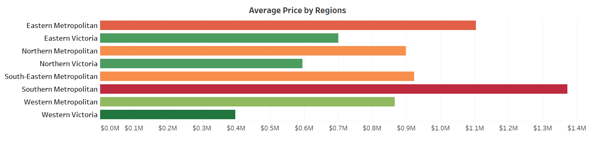
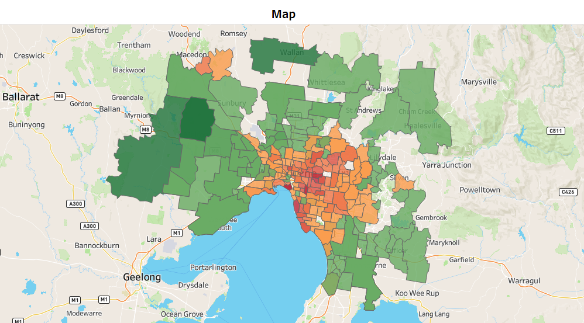
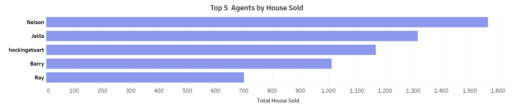
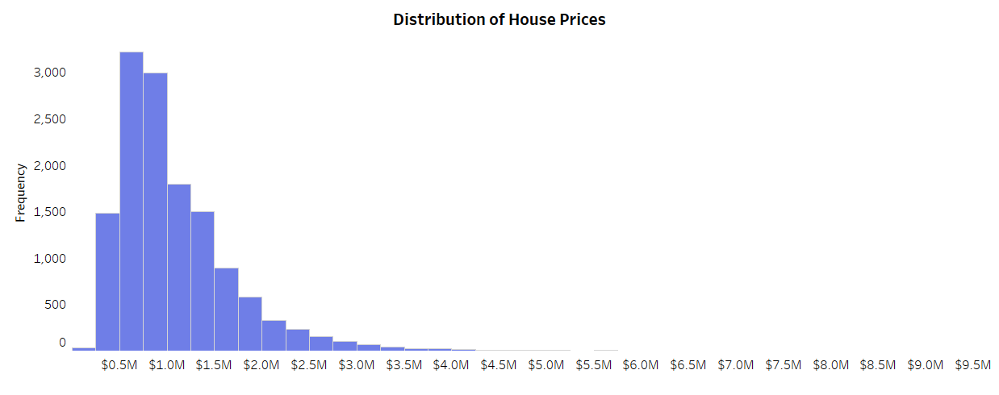
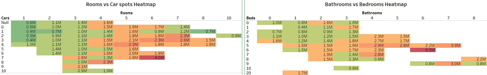
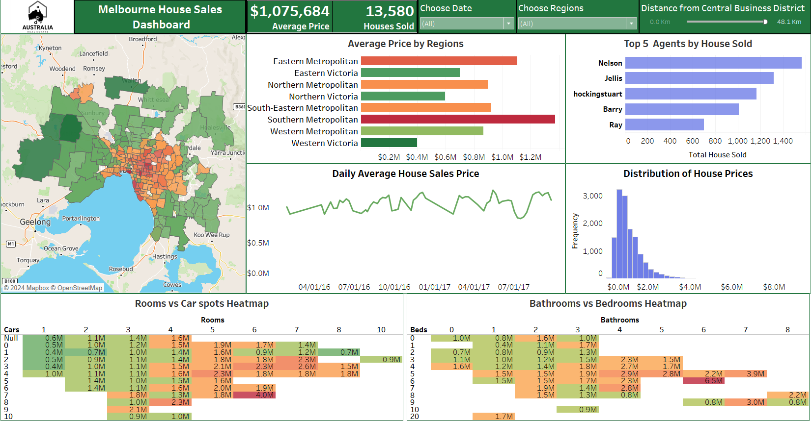

Melbourne House Sales Prices
Melbourne, Australia—a vibrant city known for its coffee culture, arts scene, and diverse neighborhoods—also boasts a diverse real estate market. The mission is to unravel the intricacies of house prices in this captivating metropolis.
Why This Matters? Understanding Melbourne's property market isn't just about numbers; it's about people finding their dream homes, investors seeking opportunities, and agents navigating trends.
Here's a breakdown of key findings from the Melbourne House Sales Prices project using Tableau:
1. Regional Price Variation:
- Melbourne is divided into eight regions. The five Metropolitan regions have an average price exceeding $800,000, while the three Victoria regions fall below $700,000.
- Southern Metropolitan stands out with an impressive average price of $1.4 million, and it's the most active region with 4,695 houses sold.
- Western Victoria, with an average price of $400,000, has lowest sales (only 32 houses).
2. Suburb Insights:
- A color-coded map reveals that central suburbs—marked in orange and red—command higher prices (above $800,000).
- Canterbury tops the list with an average price of $2.1 million, based on 54 house sales.
- Reservoir emerges as the most common suburb, with 359 houses sold at an average price of $600,000.
3. Top Real Estate Agents:
- Nelson, Jellis, hockingstuart, Barry, and Ray are the most active agents.
- Nelson leads the pack, selling 1,565 units in Northern & Western Metropolitan.
- Southern Metropolitan sees the most agent activity of 131 agents, with hockingstuart securing 642 deals.
4. Price Distribution:
- Most houses fall within the $500,000-$800,000 range (3,224 units).
- The next popular bracket is $800,000-$1,000,000 (2,997 units).
- A single house was sold at a staggering $9.0 million in Mulgrave (South-Eastern Metropolitan), handled by Hall.
- The most affordable house, priced at $131,000, is in Caulfield (Southern Metropolitan), sold by Rodney.
5. House Characteristics:
- There're 5,591 houses sold with 2 car spots and 5,509 houses sold with 1 car. The price range for both cases spans from $400,000 to $2,300,000.
- The sweet spot for house rooms seems to be 3 bedrooms and 1 bathroom, with 3,228 units sold.
- For the standard configuration of 2 bathrooms, 3 bedrooms, and 2 car spots, the average price hovers around $800,000-$1,000,000.
6. Final Analysis:
- The average house price in Melbourne, Australia stands at $1,075,684.
- A total of 13,580 units were sold between January 2016 and September 2017.
- Buyers show a preference for houses closer to the CBD (Central Business District), particularly in the Southern Metropolitan region.
- Notable suburbs where buyers frequently look for houses include Reservoir, Bentleigh East, Preston, Brunswick, and South Yarra.
As we conclude this project, keep in mind that Melbourne's real estate market is always changing and should be consider additional factors such as entertainment, medical services, and shopping when evaluating properties. Whether you're an agent or a buyer, this dashboard can provides valuable insights. View the project yourself via the links below.
- Tableau Public: public.tableau.com/views/Melbourne
- Kaggle: kaggle.com/datasets/dansbecker